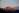
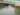
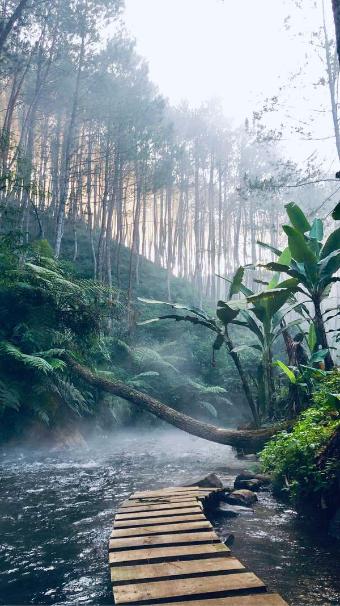
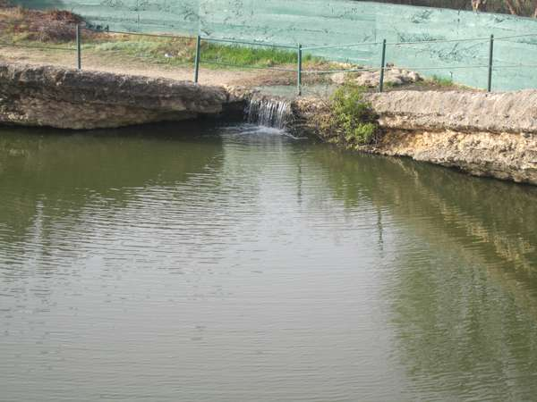

<!-- ng lazy load image example
<picture>
    <source media="(min-width: 900px)"  [attr.lazyLoad]="'../assets/images/dest/jungle-lg_1x.webp 1x, ../assets/images/dest/jungle-lg_2x.webp 2x'" type="image/webp"/>
    <source media="(min-width: 601px)" [attr.lazyLoad]="'../assets/images/dest/jungle-md_1x.webp 1x, ../assets/images/dest/jungle-md_2x.webp 2x'" type="image/webp"/>
    <source [attr.lazyLoad]="'../assets/images/dest/jungle-sm_1x.webp 1x, ../assets/images/dest/jungle-sm_2x.webp 2x'" type="image/webp" />
    
</picture>

<picture>
    <source media="(min-width: 900px)" [attr.lazyLoad]="'../assets/images/dest/mountain-lg_1x.webp 1x, ../assets/images/dest/mountain-lg_2x.webp 2x'" type="image/webp"> 
    <source media="(min-width: 601px)" [attr.lazyLoad]="'../assets/images/dest/mountain-md_1x.webp 1x, ../assets/images/dest/mountain-md_2x.webp 2x'" type="image/webp"> 
    <source [attr.lazyLoad]="'../assets/images/dest/mountain-sm_1x.webp 1x, ../assets/images/dest/mountain-sm_2x.webp 2x'" type="image/webp" > 
    
</picture>

<picture>
    <source media="(min-width: 900px)" [attr.lazyLoad]="'../assets/images/dest/sample-lg_1x.webp 1x, ../assets/images/dest/sample-lg_2x.webp 2x'" type="image/webp"> 
    <source media="(min-width: 601px)" [attr.lazyLoad]="'../assets/images/dest/sample-md_1x.webp 1x, ../assets/images/dest/sample-md_2x.webp 2x'" type="image/webp"> 
    <source [attr.lazyLoad]="'../assets/images/dest/sample-sm_1x.webp 1x, ../assets/images/dest/sample-sm_2x.webp 2x'" type="image/webp" > 
    
</picture>

<picture>
    <source media="(min-width: 900px)" [attr.lazyLoad]="'../assets/images/dest/sea-lg_1x.webp 1x, ../assets/images/dest/sea-lg_2x.webp 2x'" type="image/webp"> 
    <source media="(min-width: 601px)" [attr.lazyLoad]="'../assets/images/dest/sea-md_1x.webp 1x, ../assets/images/dest/sea-md_2x.webp 2x'" type="image/webp"> 
    <source [attr.lazyLoad]="'../assets/images/dest/sea-sm_1x.webp 1x, ../assets/images/dest/sea-sm_2x.webp 2x'" type="image/webp" > 
    
</picture> -->
<div class="block">
    test
</div>

<picture>
    <source media="(min-width: 900px)"  data-srcset="../assets/images/dest/jungle-lg_1x.webp 1x, ../assets/images/dest/jungle-lg_2x.webp 2x" type="image/webp"/>
    <source media="(min-width: 601px)" data-srcset="../assets/images/dest/jungle-md_1x.webp 1x, ../assets/images/dest/jungle-md_2x.webp 2x" type="image/webp"/>
    <source data-srcset="../assets/images/dest/jungle-sm_1x.webp 1x, ../assets/images/dest/jungle-sm_2x.webp 2x" type="image/webp" />
    
</picture>

<picture>
    <source media="(min-width: 900px)" data-srcset="../assets/images/dest/mountain-lg_1x.webp 1x, ../assets/images/dest/mountain-lg_2x.webp 2x" type="image/webp"> 
    <source media="(min-width: 601px)" data-srcset="../assets/images/dest/mountain-md_1x.webp 1x, ../assets/images/dest/mountain-md_2x.webp 2x" type="image/webp"> 
    <source data-srcset="../assets/images/dest/mountain-sm_1x.webp 1x, ../assets/images/dest/mountain-sm_2x.webp 2x" type="image/webp" > 
    
</picture>

<picture>
    <source media="(min-width: 900px)" data-srcset="../assets/images/dest/sample-lg_1x.webp 1x, ../assets/images/dest/sample-lg_2x.webp 2x" type="image/webp"> 
    <source media="(min-width: 601px)" data-srcset="../assets/images/dest/sample-md_1x.webp 1x, ../assets/images/dest/sample-md_2x.webp 2x" type="image/webp"> 
    <source data-srcset="../assets/images/dest/sample-sm_1x.webp 1x, ../assets/images/dest/sample-sm_2x.webp 2x" type="image/webp" > 
    
</picture>

<picture>
    <source media="(min-width: 900px)" data-srcset="../assets/images/dest/sea-lg_1x.webp 1x, ../assets/images/dest/sea-lg_2x.webp 2x" type="image/webp"> 
    <source media="(min-width: 601px)" data-srcset="../assets/images/dest/sea-md_1x.webp 1x, ../assets/images/dest/sea-md_2x.webp 2x" type="image/webp"> 
    <source data-srcset="../assets/images/dest/sea-sm_1x.webp 1x, ../assets/images/dest/sea-sm_2x.webp 2x" type="image/webp" > 
    
</picture>


<!-- 


 -->
                  